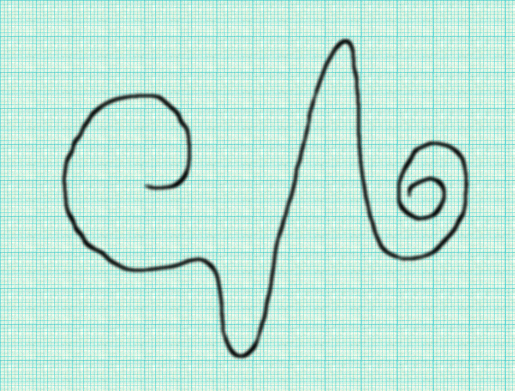
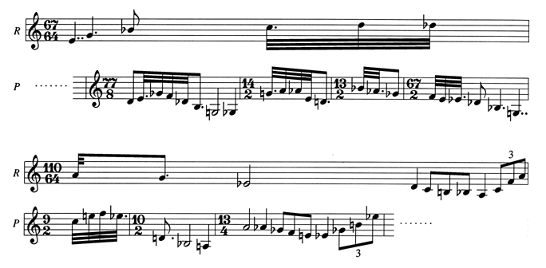
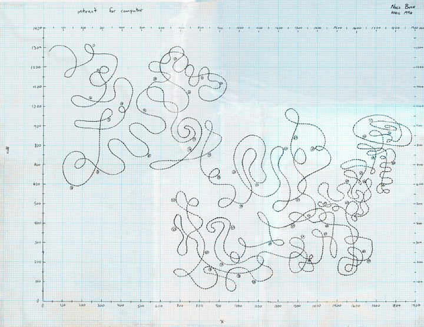

| How might a musical system for computer synthesis organically integrate temporal structure with sonic organization? The following describes my attempt to develop a prototype of such a system, using the C language, the Cscore function library, and Csound. I began with a drawing, produced prior to the formulation of the system and conceived as the raw image of a primary piece of music yet unheard. Rather than create my system and then "output" its music, I decided to regard the drawing as a full-fledged score, for which I had to create the appropriate system in order to hear the music. |
| I directed my efforts toward producing a musical system in which "time" would not function as an axis against which "sound" "happens", but instead in which sound and time would manifest as inextricably linked properties of the whole music. In the system I would construct, all the "times" of a piece-all relations and correspondences observed purely within the system, not mere measured quantities-would manifest as truly organic and manipulable aspects of the music rather than as gridlines laid over static values of "pitch", "interval", etc. |
| From my point of view, methods of sound generation should follow from, rather than guide, issues of structure. I focus on the more abstract layers of the compositional process, because I regard these concerns as nearly primary in relation to the nature of the activity of composing, and overridingly compelling as reasons to compose in the first place. I define "progress" as any development in the lucidity for myself of my creative aspirations. I borrow theory, concepts, and techniques as needed, for raw materials of creative exploration |
| For me, the ultimate appeal of the computer as a medium for composition lies not in its putative ability to produce "any sound one can imagine", nor in its utility for automating and precisely executing process-complexes which would otherwise require a skilled human (or superhuman) contingent to faithfully carry out. The true allure of the computer beckons from the perennially extensible reaches of abstraction into which it can deliver the composer. Music can arise that makes its sense within worlds unimaginable or inaccessible without the participation of the computer. "Getting there" and "being there", in terms of the making and experiencing of a piece of music, have a vividness that the computer, specifically, enables. The composer's journey from the first compositional urge, through all its ramifications and intermediary states, to the "final piece" (if such ever crystallizes) receives deep exposure, for the perusal of both composer and others, thanks to the hard documentary evidence of the computer code which undergirds the compositional endeavor. The required precision creates an exceptional potential for theoretical refinement and specialization. |
| I embrace the implications of "computer music" per se more literally than other approaches which pick from the resource kit of the computer only those concepts and methods which seem most serviceable to non-computer modes and habits of music composition. I pursue the aspects of computer composition unique to the world of the computer, even to the extent of ignoring altogether the traditional concerns of composition. |
| A large gap separates "new sounds" from "new music". This problem looms particularly large for a computer composer who wishes to discover how to make a leap from clever synthesis algorithms to a sui generic piece without falling short upon a macrostructural arrangement of algorithm-objects that has less compositional intensity than the signal-level synthesis project has precision. While computer composers may create wildly original "sounds" and "textures", the musical structure which holds these objets d'art together remains at best an imported formality or at worst an ad hoc assemblage. This is regrettable if one seeks not only new content, but also new meaning in "new media". |
| The interface a computer composer chooses exerts an indelible influence on the music produced. Awareness of the nature of this influence enables us to emphasize desirable aspects and avoid unwanted effects. Minimally, when composing with computers, I wish to tease out the conceptual framework that infuses the system in use. Better still, I may actively construct the conceptual framework itself. The computer affords a rare opportunity to describe not only what will happen, but exactly how it will happen, and indeed what that "what" "is". |
| For the purposes at hand, I view programming as a creative process in which, instead of predefining my goal(s) (e.g., to simulate a natural instrument) and then evaluating my subsequent work based upon how close it comes to the mark, I rather place my compositional aims within the feedback loop that includes my work with the computer and the output it provides me. So the question of how to make the sound of a drawing (or some other input) avoids tautological concerns of could or should-becoming, in fact, even more than a determination of how I want to interpret it-and reveals itself instead as a matter (not a question or a determination) of how it happens that it gets interpreted, as an integral fact of the story of the entire compositional endeavor. |
|

|
|
Figure 1
|
| I regarded the curve I drew, pictured above (Figure 1), as the image of the piece I would compose. I set myself the imperative to discover the curve's music through the development of a system characterized as a) "organic" in its relationship to the drawing, b) as "self-contextual" as possible, and c) where not purely self-contextual, at least not arbitrary in its borrowed forms. As an expression of compositional aims, this statement functions as a means of focusing my project metaphorically and conceptually. |
| Determining how my program might read the image required that I define an attitude about my view of the drawing. I decided that this drawing did not suggest an "x-y graph" that plots the change in one value on one axis against the change in another value, least of all a "something over time" graph. Instead it looked to me like a path: a path for one to follow as though one travels along the line: turning with it, speeding up and slowing down with it, feeling the motion internally as one feels music. One approach to the interpretation of this concept mathematically, working solely from the image, might read the path as a parametric curve, in which a third vector-call it t-moves along the line, itself an ordered list of (x, y) coordinate pairs. My reading of this curve by laying it onto ruled paper, measuring coordinates at regularly spaced intervals starting at the left endpoint of the curve, yielded a table of values which began: |
| This data table had two properties which seemed useful to the structuring of a "self-contextual" system: the values in each of the coordinate pairs related to each other meaningfully-i.e., "t-meaningfully"-and the order of the coordinate pairs factored equally critically in the "meaning" of the datafield as a whole. |
| I interpreted this as a diagram of a time structure, from at out-of-time perspective. I envisioned a particle or a being moving along the curve, as t, at perhaps even a constant rate, in a path described by the (x, y)-pair data table. I imagined that this particle/organism might, for instance, experience inertial forces due to the angle of its motion, thus altering its speed, changing its "muscle tension", etc. By viewing the changes in (x, y) pairs through t, I saw that I gained a systemic view of the situation in which t functioned as a time shape, rather than as a mere "axis of time". The available data might look skeletal, but the extrapolative approach held promise. |
| The matter of reading the drawing thus became a task of assigning correspondences between the curve and the music in development, rather than between the curve and "the sound". The drawing would determine all the different aspects of the eventual sound. I might pull some values directly; I might derive others as secondary or tertiary results of more direct measurements. I began simply by deriving pitch values from both the x and y coordinates (the very thought!). By choosing to use pitches rather than frequency values, I strengthened the relational qualities within the curve. Although I introduced a registral dimension later in the construction of the piece, for the initial reading I left the pitch range open (i.e., classless). |
| I regarded this first reading of the curve as only a start: the reference-background for the music. With the aid of the Cscore functions, my prototype C program generated a score, and a simple Csound orchestra synthesized the crudest sonic sketch. This first result, a pair of plodding parallel pitch-successions, each at least as noncommittal on its own as a walking bass stripped of its context, already suggested intervallic systematization, but still manifested a good bit less than a full harmonic system. |
| I had already decided that "note" durations, dynamics and timbre, apparent spatial locations, and all other qualities would derive from the same curve. I sought multiple ways of reading the same data which stayed consistent with the initial "organic" metaphor of a moving body. For example, notes in a tighter part of the curve might happen faster-or have shorter durations-than those in looser segments. Quantizing these durations would add a dimension of relative meaning among the notes. I developed timbre in a similar way, by generating spectral profiles according to, for instance, the comparison between the durational and pitch aspects of a note against its immediate neighbors. I derived all other qualities of the initial notelist in a similar manner. (See instrument 1.) |
| I laid the subsequent course of this enterprise as the enfolding of more and more articulations into the whole of the becoming-music by means of secondary process layers that would get generated along with the already severalfold recursively-derived qualities. The process which grew into my C program, subsub, began as a substitution or "enriching" process, using a method called "reach" which constructed the sound musically: extrapolating enriched versions of the curve-directed reference background by using the curve to guide successive selection and transformation of segments of the originary material. |
| Although I used conventional terms and synthesis methods, I employed them with different aims. I approached the creation of the total sound as a multi-level, multi-scale, evolutionary whole-piece process. This method differed greatly from ornamentation in that the latter usually makes little intrusion upon the time-structure of the music being "gussied up", whereas my process treated all temporal qualities of the proto-musical material being enriched as just as malleable as harmonic and other qualities, recognizing "harmonic", "rhythmic", and other aspects of music as truly inseparable from "time". I did not plot events against time; rather, the events themselves "plotted" and created time (not "filled" it). A partial description of the process follows: |
| Start with a series of elements (with pitch, durational, and other qualities) derived from the curve as described above. Call this originary series R (for "raw"). |
| R has n elements, each notated as an "r" with a subscript: |
|
R = {r0, r1, r2, ... , rn}
|
| Generate the enriched series, P (for "processed"), by the following method. |
| Read through R, one element at a time. Call each step through R (which corresponds to a discrete change in t) a "T-step", and let it correspond to an associated subseries R't ("R prime sub t"). Call the set of all t-values T: |
|
T = {0, 1, 2, ..., n}
|
| At each T-step, read from the curve a "reach" value integer a (based on, e.g., tightness, steepness, direction) contstrained such that: |
|
0 ± t < a < n ± t
|
| Each R't has a + 1 elements. Generate subseries P't by processing each element of R't (exemplified below). |
| Notate each corresponding element of R't and P't as an "r" or a "p", respectively, with a subscript "u". Call the set of all u-values U: |
|
U = ±{t, t + 1, t + 2, ..., t + (a ± 2), t + (a ± 1), t + a}
|
| Thus: |
|
P't = {pt , pt + 1 , pt + 2 , ..., pt + (a ± 1) , pt + (a ± 2) , pt + a } <=>
|
|
R't = {rt , rt + 1 , rt + 2 , ..., rt + (a ± 1) , rt + (a ± 2) , rt + a }
|
|
(or P't = {pt , pt ± 1 , pt ± 2 , ..., pt ± (a + 1) , pt ± (a + 2) , pt ± a } <=>
|
|
R't = {rt , rt ± 1 , rt ± 2 , ..., rt + (a ± 1) , rt + (a ± 2) , rt ± a } )
|
| One element-process: where "D(e)" signifies the durational quality of any element e, |
|
D(pu) = [D(ru) ÷ D(rt --> ru)] x D(ru).
|
| Thus the durational quality of the processed subseries P't, having the same number of elements as the raw subseries R't, has a durational quality equivalent to that of the corresponding element rt. |
| Another element-process: where "P(e)" signifies the pitch quality of any element e, and PI(e --> f) signifies the interval from P(e) to P(f): |
|
P(pu) = P(ru) + PI(rt --> pt)
|
| Figure 2, in conventional musical notation (admittedly unwieldy for these purposes), shows several sequential P't derivations, using just these two element-processes, given an arbitrary series of a-values {7, 3, -2, -5, -3, 2, 8}. In the example, each P't subseries begins beneath its corresponding rt. |
|

|
|
Figure 2
|
| The method described above comprises the heart of the C program subsub. I did not conceive subsub as a general-purpose algorithmic music program; its specialization to the concerns at hand makes it unsuited for multiple uses. I desgined the program solely for the rendering in sound of a single piece. I regard all versions of the program and its companion Csound orchestra, and all sound results produced thereby, as more or less accurate realizations of the musical piece that satisfies me as a sounding of the originary drawing. |
| I have divided this enterpise into two distinct phases, signified by two different piece names generally used together with a slash: tract, which sounded the curve pictured in Figure 1, and intract, which continued the development of subsub and the companion orchestra, but took as its source a new curve, shown in Figure 3. |
| I drew this curve in an imaginative extrapolation upon the concepts under development. Listening to the sound output that subsub and the tract orchestra at a particular stage in the compositional process produced, I created this image acting as a human version of the subsub engine in reverse. Literal accuracy aside, I intended to further interpenetrate the metaphorical compositional precepts with the synthetic-algorithmic program structure. I plotted the new curve as a new datafield ("minspec" in subsub terms), this time using much smaller T-steps to attain a finer degree of curve-matching (i.e., accuracy of t), and then the programming-compositional exercise continued its evolution. |
| Subsub derives timbre, spatial location, and other parameters using similar processes. In pursuit of "self-contextuality" for the piece, I introduced a second-order process, "tally", which derives some qualities including dynamics. Subsub's instr_1(), instr_2() and instr_4() modules have one-dimensional arrays called tally with size number-of-pitch-classes. As the program derives both the R series and the P series, the tally array keeps a running count of the number of occurences of each pitch-class as of any moment in the piece, and uses these values as a weighting mechanism to influence or determine local sound-qualities of an event. |
|

|
|
Figure 3
|
| I preserved the pairing aspect of the subsub process throughout the entire organization of the program-orchestra suite: each "event" consists of a pair of notes, both of whose parameter sets get included in the same i-line in the Csound scorefile generated. This makes for almost double the number of p-fields that the scorefile would have included if it instead listed x- and y-derived events as individual i-lines, but I found the pairing essential to the realization of the piece, because the pairs share parameter values even in the orchestra. I didn't care that the program could have easily duplicated any shared values between two events, because I wanted to maximize the extent to which the structure of the piece pointed toward interrelatedness of all events. In truth, I regard the Csound scorefile as the worst place to look for the musical structure of the piece, short of the orchestra itself which reveals almost nothing; the piece's intended character and specificity reside in the pairing of subsub with the originary curve (either the tract or the intract image). |
| Cscore simplifies some of the aspects of relative element references by using pointers. I used Cscore, along with some simple array structures, and coupled with a C macro set of #defines that developed along with the program (see defg.h, defd.h, and defs.h), to create the language with which subsub talks about and builds the scorefile for Csound. (The macros mostly made it easier to keep track of p-field numbers; no doubt a skilled programmer could substitute a system more flexible than the one in use here.) I could thus create variants on the enriching process described above with ease, as for-loops involving arrays and pointers. An excerpt from instr_4.c follows that demonstrates the use of Cscore with the p-field macros, and the tally function. |
| |
1 int instr_4(int bat)
{
...
2 for(evnum=beg, q=0; q<numnotes; q++, i1ev++) {
...
3 reach=(*i1ev)->p[I1_RCH];
4 pchdiff1=
((*i1ev)->p[I1_PCH1])-((*(i1ev+reach))->p[I1_PCH1]);
5 pchdiff2=
((*i1ev)->p[I1_PCH2])-((*(i1ev+reach))->p[I1_PCH2]);
6 for(r=0; abs(r)<abs(reach); r+=dir, evnum++, i4ev++) {
...
7 (*i4ev)->p[I4_PCH1]=quant(fbetw(
((*(i1ev+r))->p[I1_PCH1])+pchdiff2,
absminpch,absmaxpch),pcsize);
8 (*i4ev)->p[I4_PCH2]=quant(fbetw(
((*(i1ev+r))->p[I1_PCH2])+pchdiff1,
absminpch,absmaxpch),pcsize);
9 (*i4ev)->p[I4_PC1]=pc1=pc((*i4ev)->p[I4_PCH2]);
10 (*i4ev)->p[I4_PC2]=pc2=pc((*i4ev)->p[I4_PCH1]);
11 notetime+=(20/(pc1+pc2+2))*((*i4ev)->p[II_DUR]);
12 tally1[pc1]++;
13 tally2[pc2]++;
...
14 minatk=gof(absminatk, 0.1*((*i4ev)->p[II_DUR]));
15 maxatk=5*minatk;
16 (*i4ev)->p[I4_ATK1]=linscale(tally1[pc1],
tally1[talmax(tally1)],tally1[talmin(tally1)],
absminatk,maxatk);
17 (*i4ev)->p[I4_ATK2]=linscale(tally2[pc2],
tally2[talmax(tally2)],tally2[talmin(tally2)],
absminatk,maxatk);
|
| |
(The line numbers serve only as arbitrary reference marks.) The macros I used here necessitate more typing (e.g., "(*i4ev)->p[I4_ATK1]" instead of "(*i4ev)->p[9]"), but allow easier updates to the code if I change the number of p-fields. |
| In the terms used introduced earlier, with the addition of an x- or y- prefix to the element term, line 7 amounts to: |
|
P(x-pu) = P(x-ru) + PI(x-rt --> x-pt),
|
| with the additional stipulation that P(x-pu) must not fall outside of a pre-specified pitch-range-the fbetw() function preserves pitch-class while bringing the value within the range-and that P(x-pu) gets quantized to a pitch-class value. In this case I used quant() (defined in cal.c) as a lazy safeguard against the possibility that I had lost alignment to the pitch-class somewhere in the "curve --> fullplex--> instr_1()" process, but elsewhere in subsub I used quant() to allow conversant use of non-quantized pseudo-pitches or frequency values and regular pitch-class values. |
| The above code fragment also demonstrates the use of tally and its companion functions talmax() and talmin() (see sco.c), which provide the most- and least-occuring pitch-class value, respectively, as of the present point, and also the essential function linscale() (defined in cal.c), which refits any value into a new range based on where it falls within an originary range. Line 17 thus says, "The attack value for (x-pu) falls within the range of minimum and maximum allowable attacks (derived in lines 14 and 15 from the duration of (x-pu) and limited by an absolute minimum) in direct proportion to where the number of occurences, as of this moment, of pitch-class of (x-pu) falls within the current picture of the number of occurences, as of this moment, of all pitch-classes." |
| The tract/intract orchestra does not employ any particularly unusual synthesis algorithms. Instr 1, which plays the "reference background" (R), consists of a simple bandpass filtered white noise instrument. Instr 2 and instr 4, which each play a variant P series, use similar subtractive synthesis methods, with quite a bit of duplicated code. Instrs 91, 92 and 94 provide global reverb for the three main instruments. (The spatialization algorithms, my own primitive attempts to realize a spatial reverb model, owe most of their inspiration to the Winter 1995 issue of Computer Music Journal. My model lacks sophistication, falls short of physical accuracy, and adds tremendous bulk to the code: its introduction ballooned the processing time of the intract piece on my NeXTstation from approximately 24 hours to ten days! At the very least, one might better achieve the desired results with a well-coded ugen.) |
| Tract/intract has gone through a long and torturous evolution. I have noted with great interest that while successive generations of the piece have differed from one another both in event-to-event character and "overall sound", a particular continuity of sensibility has linked them all. A strong sense of "a way of happening" pervades all of the versions of this piece. I attribute this to the structural-metaphorical focus of my compositional attention to the project. The music of tract/intract seems a very "inner" sort. Its reference-structures so tightly interweave with one another to form the fabric of the music, with no associative acknowledgements to an other world either in outer signs or inner pulses, that its nature seems inexplicable, its motives dubitable. |
| I feel that this project has made great strides in exploring new concepts of synthesis that encompass a wider range of the computer-aided music composing project than low-level sound phenomena. To conclude, I wish to speculate grandiosely on the promise these ideas hold for me. |
| "Temporal synthesis" does not euphemistically indicate automatic music, and does not involve any form of artificial intelligence. Like methods of sound synthesis, methods of temporal synthesis comprise a varied and expandable set of tools, some of which may have application only in a single creative work. Unlike methods of sound synthesis, methods of temporal synthesis cannot easily quantify their "effects" or proper use. Composing with methods of temporal synthesis necessitates an all-or-nothing approach in that rather than employing techniques priorly made available for application, the composer must develop a temporal meta-construct that pervades the entire work. Specific processes manifest as coded incarnations of the originary form. |
| Temporal synthesis rejects the notion of time as a medium in which static objects flow or get arranged. If the media in use do not possess enough permeability to fuse with the temporal meta-construct, then they cannot serve as appropriate media for temporal synthesis. This makes music in sound the ideal medium for temporal synthesis. The methods of temporal synthesis used in a musical work must lie on a continuum with the sound synthesis methods, so that the composition of the time truly begins at zero. Works of temporal synthesis demand for their full realization an open-ended composing schedule, and require that the composer attentively follow through all of the implications of the overall concept. |
| The promise of faster and more efficient computer processors holds one part of the key to the proliferation of works of temporal synthesis. But far greater importance lies with the interface used by the computer composer. An environment like Csound, supplemented by custom C language modules, provides a theoretical "clean room" in which to construct systems which aim for the organic self-contextuality of temporal synthesis. Maintaining low-level access to the parameters of sound generation, and providing a wide variety of algorithms with the ability to expand at any time, permits the composer to build temporal structure into a musical work at the lowest level of relevance. Here lies the open door to future works of undreamt experiential substance and quality. |